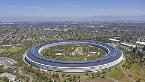

|  |
Apple, Inc. es una empresa estadounidense que diseña y produce equipos electrónicos, software y servicios en línea. Tiene su sede principal en el Apple Park, en Cupertino (California, Estados Unidos) y la sede europea en la ciudad de Cork (Irlanda).3 Sus productos de hardware incluyen el teléfono inteligente iPhone, la tableta iPad, la computadora personal Mac, el reproductor de medios portátil iPod, el reloj inteligente Apple Watch y el reproductor de medios digitales Apple TV. Entre el software de Apple se encuentran los sistemas operativos iOS, iPadOS, macOS, watchOS y tvOS, el explorador de contenido multimedia iTunes, la suite iWork (software de productividad), Final Cut Pro X (una suite de edición de vídeo profesional), Logic Pro (software para edición de audio en pistas de audio), Xsan (software para el intercambio de datos entre servidores) y el navegador web Safari. |